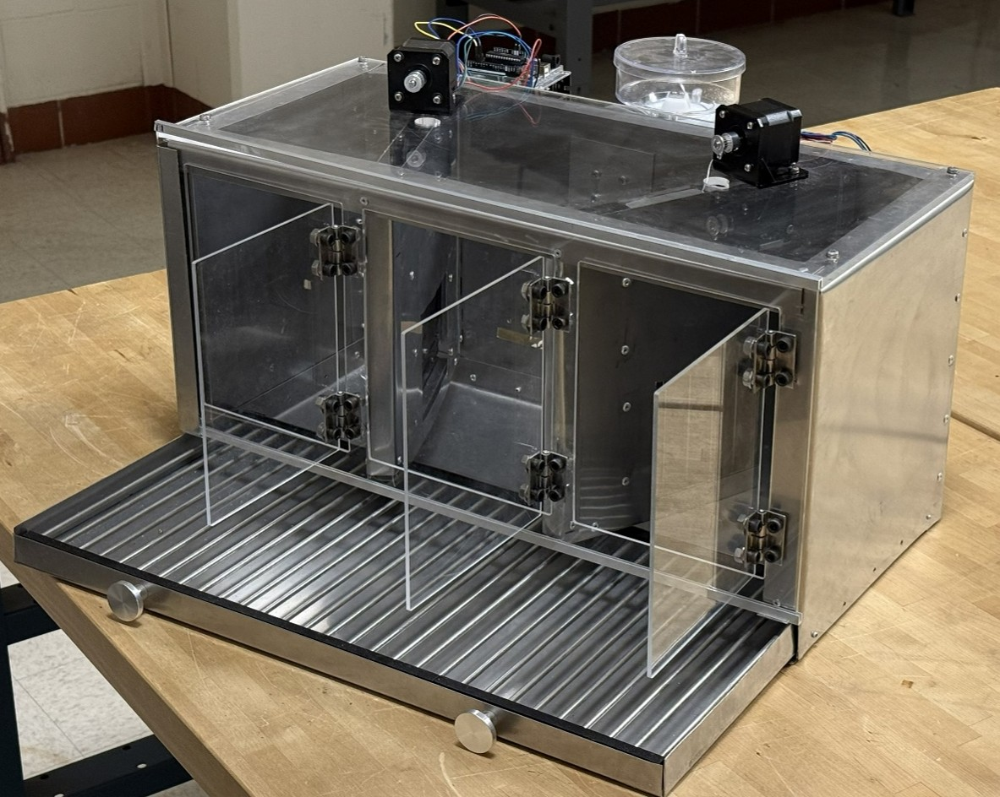
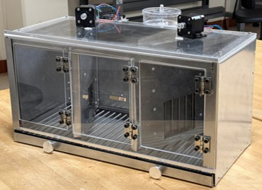
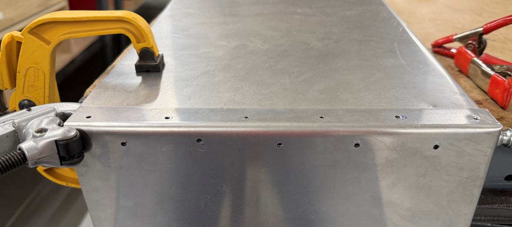
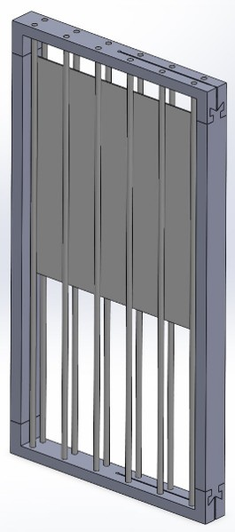
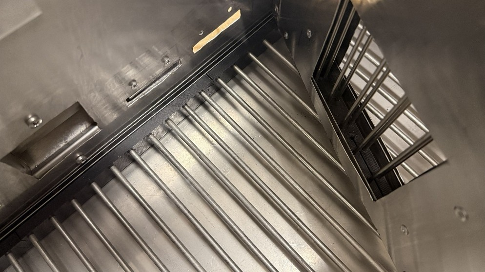
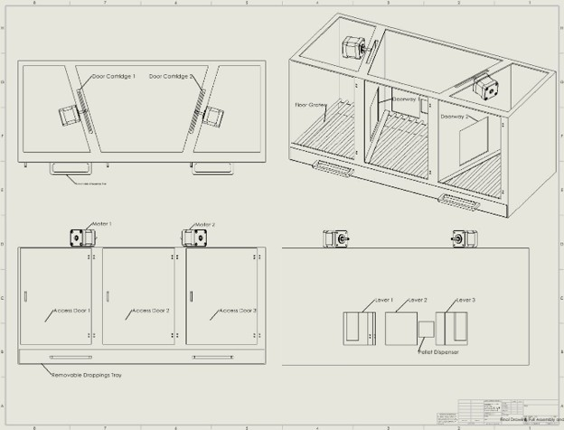
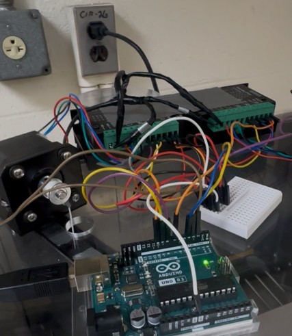
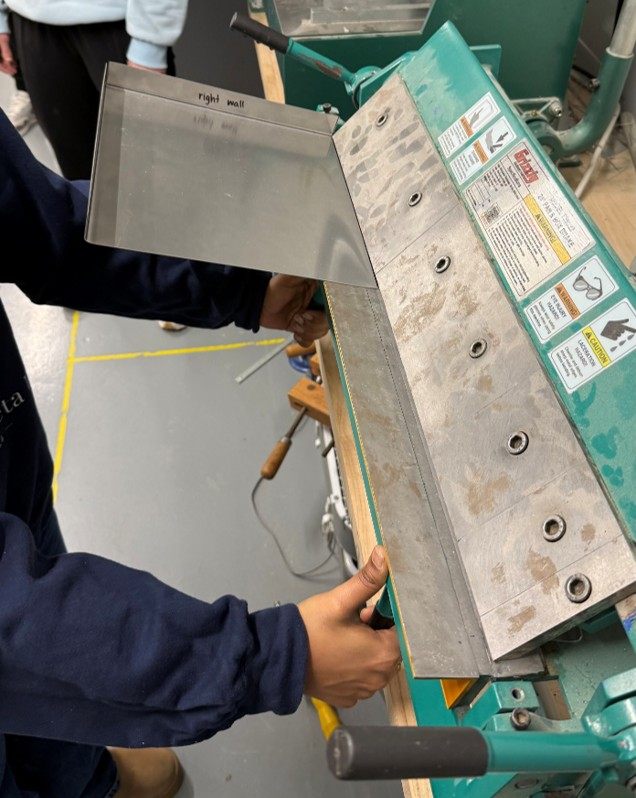

Three-chamber layout for decision making experiments

Capstone / Neurosciences Research Equipment
Multidisciplinary Capstone Project for the CBI Neuroscience Lab at Ohio State University, focused on designing an automated testing envirnoment for experimentation with chronic brain injuries(CBI) in rats.

My team and I were hired by the Neuroscience CBI Lab at The Ohio State University to design and build a testing chamber. The system was designed to automate experiments on controlled social interaction using a three-chamber testing environment. The central chamber would contain the primary test subject (CBI rat) for interaction. The rats in the side chambers would serve as options to gauge if the central CBI rat would interact with a familiar rat or an unfamiliar rat.
Three-chamber layout for decision making experiments

Stainless steel and plexiglass construction for durability, visibility, and cleanability

3D-printed door mechanisms and mechanical support components

Lever activated vertical sliding doors between chambers with separating bars

Steel grated floor and removable bottom drawer for cleaning and handling

Arduino-based lever, sensor, and stepper motor automation

My focus was the internal door mechanism and automation system. This entailed selection and impelmentation of materials, desgin tools, and fabrication techniques. From Soldiworks modeling, arduino coding, and motor torque calculations to 3D printing, stainless steel cutting and bending, and stepper motor circuit wiring, I contributed to my team and learned new skills throughout the process.


This project strengthened my understanding of client-driven engineering design, especially for research equipment where reliability, safety, cleaning, and repeatability matter as much as the basic mechanical function. It also showed the importance of tolerance control, fabrication planning, and designing mechanisms that can be assembled and adjusted without excessive manual correction.